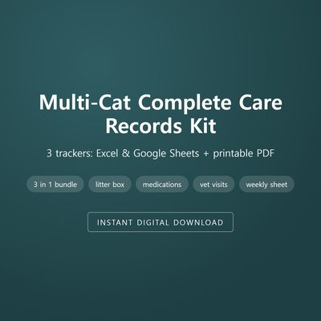
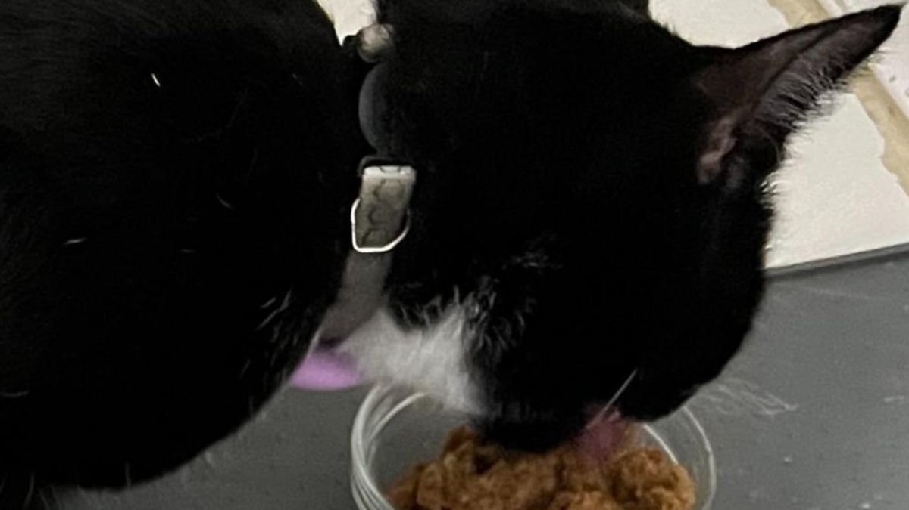
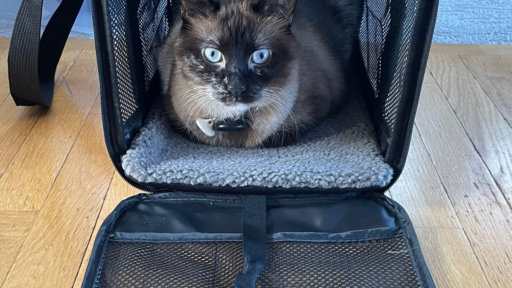
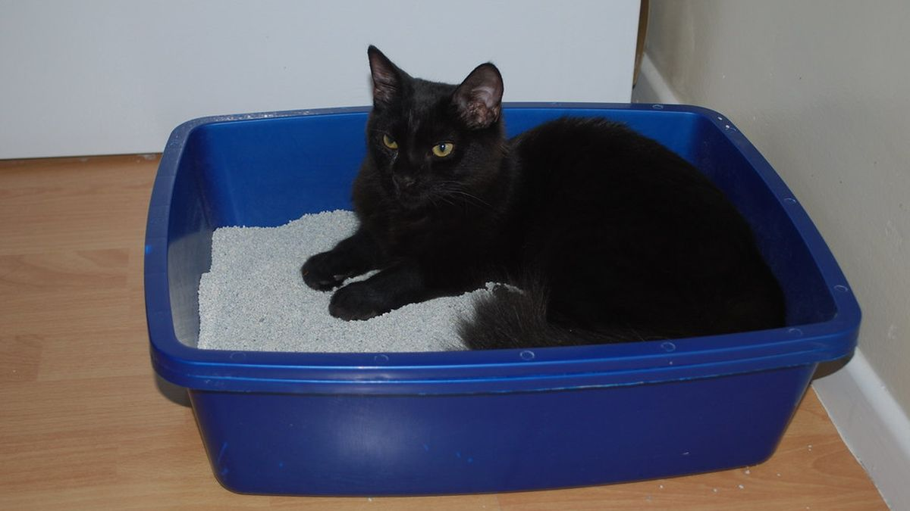
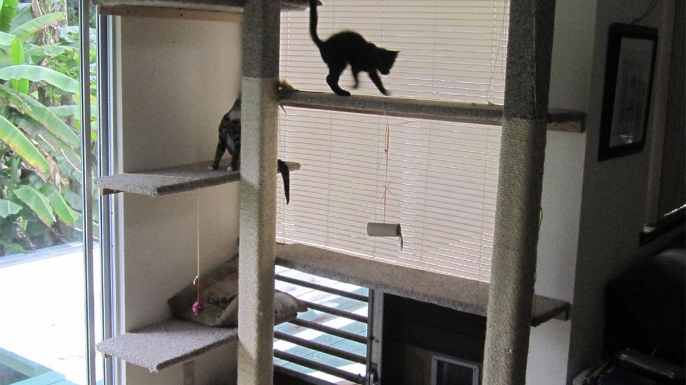
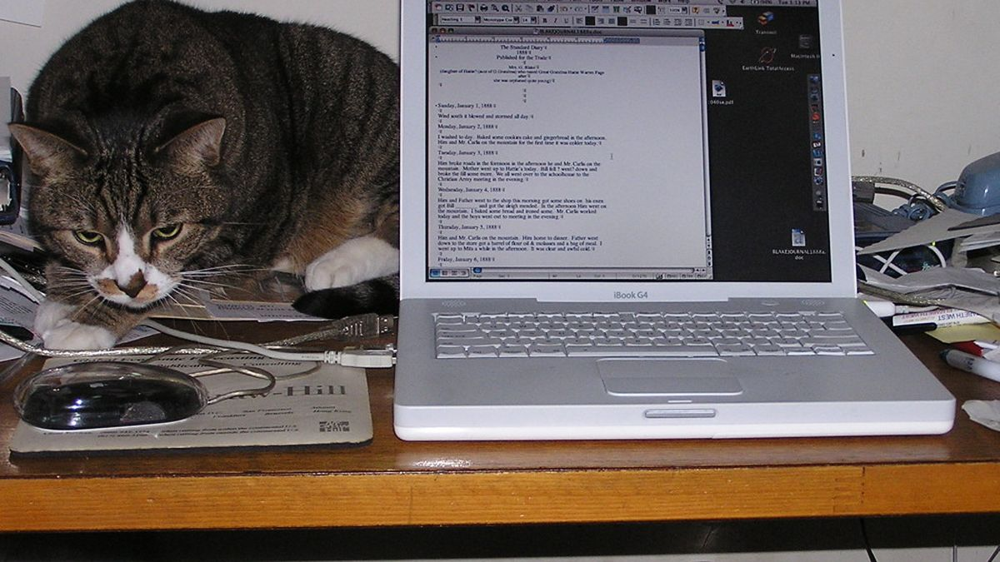
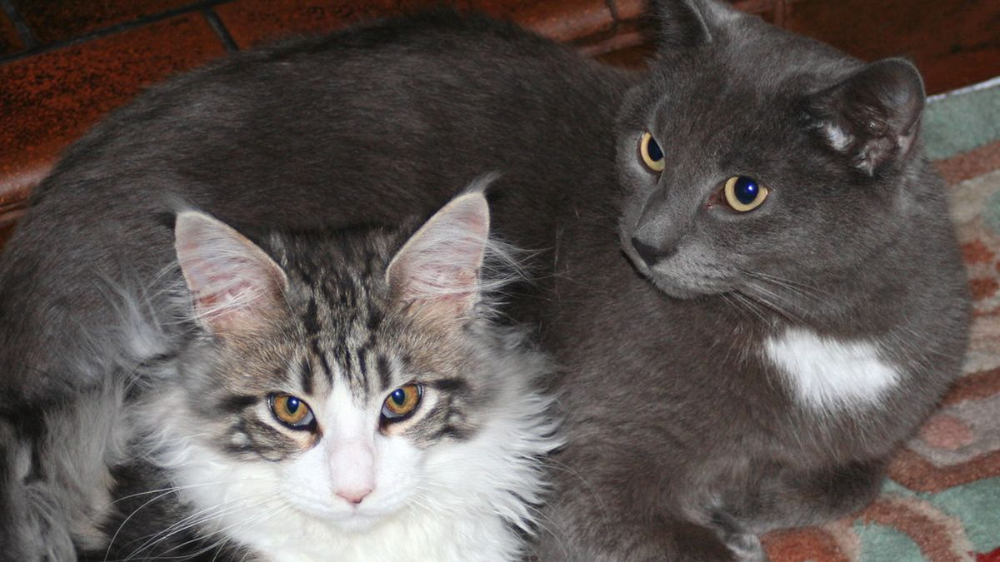

Multi-Cat Household Health & Litter Tracking
Know what's normal for each of your cats
Log litter box visits, appetite, and behavior for every cat in a few minutes a day, so you can spot changes early and give your vet real data instead of guesses.

Multi-Cat Household Health & Litter Tracker — $14.99
A ready-to-use spreadsheet and guide for tracking each cat's daily health and litter habits.
More tools for multi-cat homes
Multi-Cat Health Dashboard (Premium)Auto-updating Excel & Google Sheets dashboard$24.99

Multi-Cat Complete Care Records Kit3 trackers: Excel & Google Sheets + printable PDF$19.99 Cat Medication & Vet Visit LogExcel & Google Sheets log + printable PDF guide$7.99 Multi-Cat Weekly Daily Check SheetPrintable PDF — US Letter & A4$5.99Have a dog too?
Latest Posts

How to Tell If One of Your Cats Isn't Eating When They Share FoodShared bowls hide who's actually eating. How to tell if one cat isn't eating in a multi-cat home, what to watch for, and how to log each cat's appetite.October 29, 2026- How to Tell Which Cat Is Using the Litter BoxFinding accidents but not sure which cat is responsible? Practical ways to identify the culprit in a multi-cat home, from direct observation to simple tests.October 19, 2026

How Often Should You Weigh Each Cat in a Multi-Cat Household?How often should you weigh each cat in a multi-cat home? A practical weighing schedule, what counts as a meaningful change, and how to log it per cat.October 12, 2026
How Many Litter Boxes Do You Need for Multiple Cats?How many litter boxes do multiple cats need? The one-per-cat-plus-one rule explained, with placement tips and signs your setup isn't working.September 7, 2026
Multi-Cat Household Essentials: Products That Actually HelpProducts that genuinely help multi-cat homes run smoothly, from litter setups to feeding and enrichment, chosen to reduce stress for every cat.August 25, 2026- The Complete Guide to Multi-Cat Household Health TrackingThe complete guide to tracking health in a multi-cat household: what to log for each cat, how to spot changes early, and how to share data with your vet.August 24, 2026
- From Observations to Decisions: Using Your Tracker With Your VeterinarianTurn weeks of litter box, appetite, and behavior notes into clear patterns you can share with your vet, and know when a change is worth a visit.August 21, 2026
 Building Your Daily Tracking Routine: How to Log Without OverwhelmA few-minutes-a-day routine for logging every cat's litter box, food, and behavior without overwhelm, so tracking actually sticks.August 21, 2026
Building Your Daily Tracking Routine: How to Log Without OverwhelmA few-minutes-a-day routine for logging every cat's litter box, food, and behavior without overwhelm, so tracking actually sticks.August 21, 2026
How to Use the Multi-Cat Household Health & Litter Tracker: Complete WalkthroughA column-by-column walkthrough of the Multi-Cat Household Health & Litter Tracker, with example entries showing how to log each cat.August 21, 2026 Adjusting What You Track: Seasonal Changes and Life StagesWhat normal looks like for your cats shifts with seasons and age. Learn how to adjust what you track for kittens, seniors, and seasonal changes.August 21, 2026
Adjusting What You Track: Seasonal Changes and Life StagesWhat normal looks like for your cats shifts with seasons and age. Learn how to adjust what you track for kittens, seniors, and seasonal changes.August 21, 2026- Frequently Asked Questions About Multi-Cat TrackingAnswers to common questions about tracking a multi-cat household: what to log, how often, telling cats apart, and when to call the vet.August 21, 2026
- 5 Common Tracking Mistakes (and How to Avoid Them)Five common mistakes that make multi-cat health tracking less useful, from vague notes to skipped days, and simple ways to avoid each one.August 21, 2026

Why Tracking Your Multi-Cat Household Really MattersCan't tell which cat is off their food or skipping the litter box? Why tracking each cat in a multi-cat home catches health problems earlier.August 21, 2026